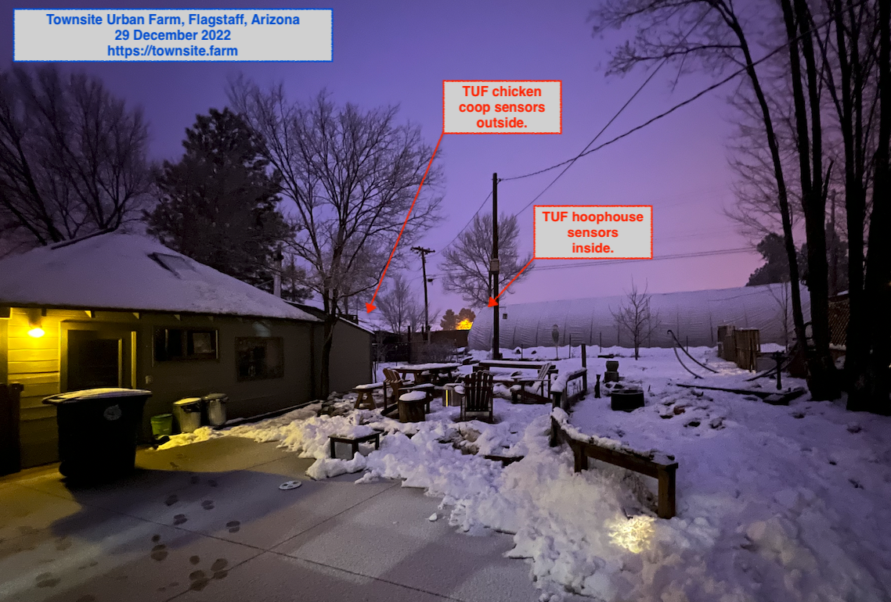

Townsite Urban Farm partners with the Four Corners Science and Computing Club at Northern Arizona University to collect weather data from our site. The most recent two weeks of data can be viewed here:
The full data dashboard can be accessed on Initial State.
The TUF site, indicating where sensors are located:
